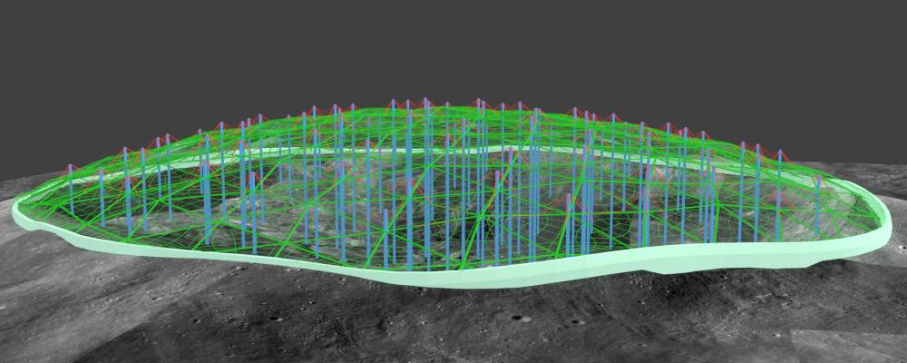
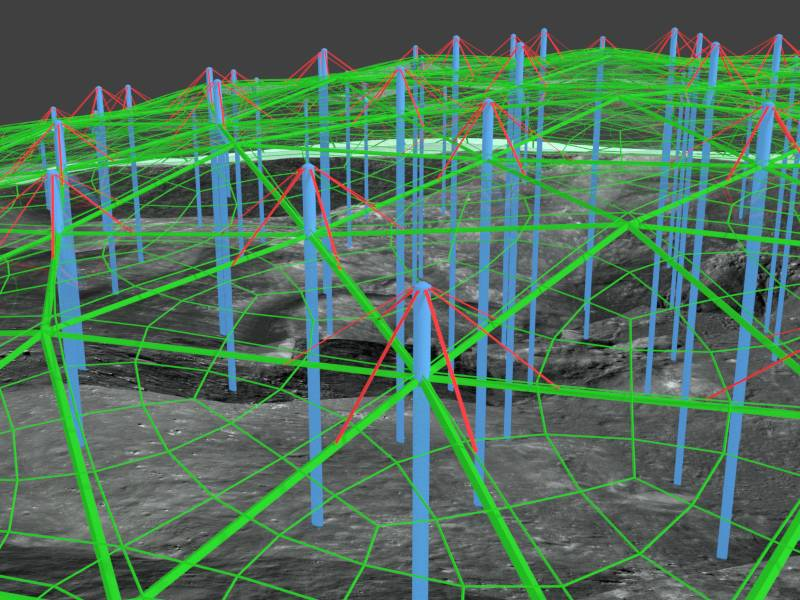
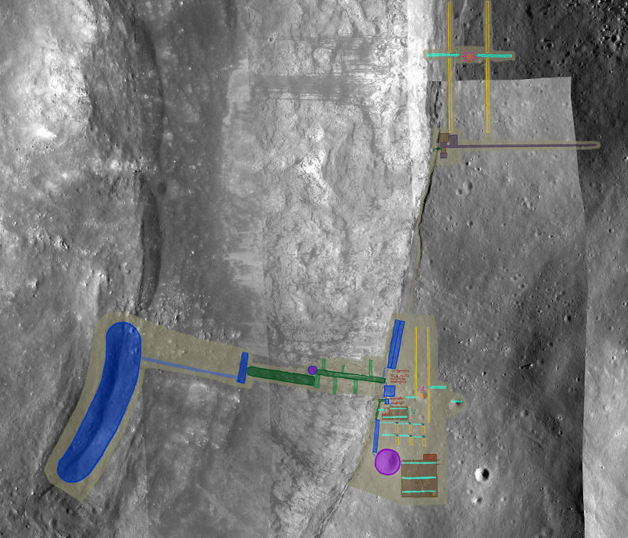

Here you will see what a focused drive to settle the Moon can create.
The first colony will fundamentally change the way humanity sees itself and its place in the universe.
We don't seek that future only because we don't see its potential.
Cernan's Promise
[1]
"We leave as we came and, God willing, as we shall return: with peace and hope for all mankind"
- Gene Cernan, as he stepped off the Moon, Apollo 17, Dec 19, 1972
is to change that.
We are building a detailed virtual model of a lunar colony, where visitors can act out all of its construction, operations, and daily life. Its design will be something that could really be built with technology in our reach,
and would really work just as presented. Visitors will experience a colony that
is profitable and growing, headed towards status as an important independent economy, ecosystem, and culture.
When people get a sense of that future, the will understand why it matters. Once enough of us understand that,
we will act. We will settle the Moon, and cross perhaps the most important threshold in human history since we mastered fire.
Hover over or tap the numbered markers to see more information.
The above images were taken by the Lunar Reconnaissance Orbiter. The image below was taken by the panoramic camera on Apollo 16. My favorite service for LRO images is QuickMap. On that service, here is a link to Lalande. Zoom in! And play with the layers menu, you open it by clicking the three diamonds on the top left of the screen. Imagery from LRO instruments, Chandrayaan, GRAIL, and Clementine are all on it.
This is a rough, partial first draft. Things are added or replaced regularly. It is here to aid collaboration and get input, which is then reflected in changes. So comments are extremely welcome - on the blog, the whiteboard, the forum, or by email to kim@moonwards.com or sigvart@moonwards.com.
A clear picture of the long-term result is necessary if people are to make a huge investment in something. Therefore we shall start with a model of Cernan's Promise with a population of several hundred people, representing the best-case scenario of what could be done in the next few decades. This time scale is relevant to the lives of most people and so that model will have the most influence. A close look at the best scenario is also well worth it as a way to put the things that hold us back in perspective. To create this best case we would need to overcome irrational fears and pointless divisions, and motivation to do that can come out of a good example of how much more we could do that way. The design is firmly based on a realistic development path, but the steps of that, for now, won't be explicitly documented in the VMC. Many of the pieces used in construction will be shown, though, and all support infrastructure.
The design is based on the primary income being residency, broadcasting, and tourism initially, and space construction for various purposes later. The habitats are designed to be pleasant places to live for the rest of your life. Thus building on a large scale is done from the outset. This is made feasible through the use of tele-operated robotic machinery and the extensive use of fused and cast basalt.
More importantly, it is made possible by a group of nations together devoting serious investment to the task - this situation is assumed by Moonwards. Maybe an example of a really fantastic project that is only possible by joining forces and using the resources freed up by not fighting, will convince people to finally properly pursue that goal. Maybe pursuing a fantastic project together creates bonds that lead to trust and then there is no desire to fight. Getting that feedback loop going would be a wonderful thing.
The Sketchfab 3d models below can be navigated using the buttons that appears in their bottom right corner when they load, after clicking the 'play' arrow. Take the tour through them with the Annotations buttons, to see explanations. Double click / tap anywhere on the models to make that spot the pivot point, then when you click-drag the mouse or slide your finger, your view will rotate around it. Consider clicking the button on the far right to show the model full-screen.
This shows the first two habitats finished and home to a crew of 30. Most of the interior hasn't been modeled but the main areas have been sketched into the first dugout and hall. This model has been done with lighting and materials that give a much better sense of what the space would be like, and it has been optimized so that it will run smoothly on most computers, including many tablets. (I don't recommend it on a phone.) If the scale seems pretty ambitious, well it is, but consider that this paper by Haym Benaroya looked at using cast basalt as a building material, and by the figures he calculated for the energy needed to melt it, just one of the Fresnel lenses planned for the melt-in-place stations could melt a metric ton of it in about 3 hours. One of these things that i've taken to calling sun guns, with a set of concave mirrors adding up to 50 m2 could do it in about 8 hours. Use a sun gun to cut a trench around the area to be excavated, and to bore holes to place micro-charges of explosives, and 99% of the material can be loosened into manageable chunks the gantry crane can lift out. The construction technique is being steadily improved, but this seems pretty doable. It would just take experimentation on-site to refine it - and when has colonization ever been achieved without a ton of adaptation and innovation on-site?
This whole colony concept depends on basalt being used for a great many things, and on focused sunlight being used to process it. The Melt-In-Place Station comes up on the first mission to test and refine how to make building materials out of the basalt dust all over the dark areas of the Moon. In the vacuum of space this basalt feedstock will behave differently than such material on Earth, and it has a chemical make-up different than anything found here.It is absolutely free of hydrated minerals (with water molecules in their crystal structure) and organic chemicals, has a higher content of iron and titanium, and its chemicals are highly reduced (meaning they tend to have extra electrons). Analysis done on Earth indicates that could mean basalt materials on the Moon would be a lot stronger than they are here. We won't know until we experiment there. At any rate, cast basalt on Earth performs well as a construction material, and all the processes proposed are based on its known properties here.
Here is the first venture into what could be done on the Moon once the scale necessary to build real towns exists. It extends the methods already outlined, and takes advantage of the terrain.
This is a chemical process that will probably be useful on the Moon, in this case for iron and water. A possible alternate approach to obtaining iron is to magnetically separate small particles high in iron using magnets, and then melting them down and skimming off the slag. The ilmenite approach would also require such a step but the feedstock might be much easier to obtain. And it creates the option of shipping only hydrogen from the poles instead of shipping water. That would save tremendously on the mass and thus the energy required for delivery, the most expensive element of the undertaking by far. Other approaches to this are being considered, and could displace this one. However, there will surely be a role for a unit of this kind, if not for this, then for processing of, say, aluminium.
The TESS, the Thermal Energy Storage System, is a centerpiece of this approach. It provides electricity generation both day and night. It isn't a very efficient system - 20% energy conversion is probably a decent estimate overall - but the fuel is free (sunlight), the system is highly durable, robust, easy to repair, and most components could be fabricated right on the Moon early in the days of a settlement. Plus it serves several additional important functions at the same time. It captures vapors of pure oxygen, and chemicals such as oxides of potassium, phosphorus, sulfur and sodium - all very useful. The pond of lava depleted in these chemicals can be partially drawn off at the end of the day and taken for further processing that is much simplified by that state. The lava could also optionally be used for construction.
This is rough work, here to get the whole plan up on the website for evaluation. First is the dome for the long-range plan of creating a city. The dome is quartz glass with 6 meters of water on top, and then another layer of quartz glass. That is for radiation and micro-meteor protection. The net force is outwards once the dome is filled with air, so the blue towers hold the dome down. At the same time, the upward pull on the cables in the center of the towers is so great, full buildings can be built around them and the net force would still be slightly upwards on those cables. The tension on them is about 1.5 million metric tons on each one.
The second image shows the cables and framework. The mass of the glass and water isn't an issue once the dome is filled with air, if anything it helps hold in the air, rather than being a mass that has to be held up. The trick here is to build the dome, so that it can be filled with air, so that mass is supported. I have thoughts about that, still working on it. Also, if there is a major meteor strike or some other disaster, and atmosphere is lost, the dome has to remain stable. The cables between the towers and the dome outer surface are there for that reason, and the towers need to be able to support all that mass if there is no air.
And this is the full layout of the colony that will be built showing 'Phase 1'. The idea right now it is to show the full colony at two points in time - when it has the stuff in the image below, and when the domed city is built. I did this to have a sense of where everything would go, and how it would all work together. Call it a placeholder for now. I know it has no labels or anything, but it gives a sense of the scale. Everything blue and green is a habitat, purple is domes, brown is industrial space.
